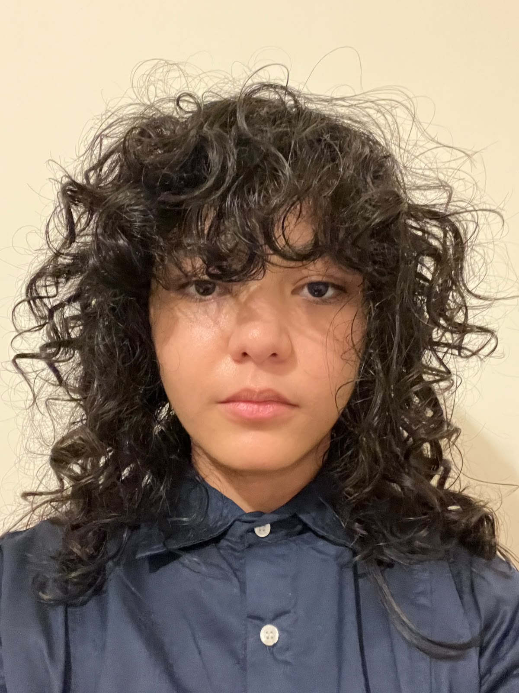

Home
My Profile

Pengalaman Bekerja
Seniman Digital Lepas
Pekerja MandiriMaret 2020 - September 2022
Remote
- Bekerja sama dengan lebih dari 20 klien dari berbagai latar belakang untuk merancang dan menghasilkan ilustrasi digital, desain karakter, serta branding berkualitas tinggi sesuai kebutuhan mereka.
Eksperimen Pengembangan Web Level Dasar
Pekerja MandiriJuni 2023
Remote
- Merancang dan mengembangkan situs web konseptual dengan gaya estetika web tahun 1990-an, menggunakan teknik autentik seperti tata letak berbasis tabel (table-based layout).
Minat / Ketertarikan / Kemampuan
- Kemampuan dalam bidang teknologi: C/C++, C#, HTML, CSS, Lua, RPGMaker 2003, Clip Studio Paint
- Kemampuan Bahasa: Bahasa Inggris (Skor DET 160), Bahasa Jepang (N5)
- Keterampilan: Melukis, Membuat musik, Pengembangan gim